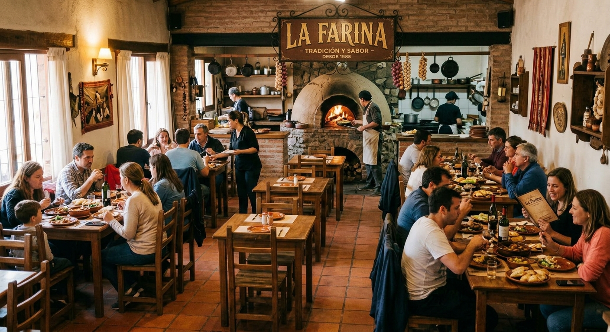

Milanesa a la Napolitana
Clásica milanesa dorada y crujiente, cubierta con salsa de tomate casera, jamón cocido y abundante queso mozzarella fundido, gratina al horno con un toque de orégano.
LA FARINA

Contamos con una extensa variabilidad de especialidades en nuestra casa de comidas con uno de los mejores chef de Argentina.
Clásica milanesa dorada y crujiente, cubierta con salsa de tomate casera, jamón cocido y abundante queso mozzarella fundido, gratina al horno con un toque de orégano.
Tortillas suaves o doradas rellenas de carne sazonada a la sartén, acompañadas de verduras frescas, vegetalitos salteados y el toque justo de especias caseras.
Tiernos bocados de pechuga o muslo cocinados a fuego lento en una cremosa salsa de verdeo fresco, vino blanco y un toque de crema de leche.